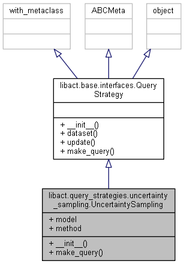

This module contains a class that implements two of the most well-known
uncertainty sampling query strategies:
- the least confidence method
- the smallest margin method (margin sampling).
This class implements Uncertainty Sampling active learning algorithm [1].
Class Diagram

Class documentation
Parameters
- model: The base model is used for training.
- :py:class:
libact.base.interfaces.ContinuousModelor - :py:class:
libact.base.interfaces.ProbabilisticModelobject instance.
- :py:class:
- method: {‘lc’, ‘sm’, ‘entropy’}, optional (default=’lc’). The method for uncertainty computing.
- least confidence (lc), it queries the instance whose posterior probability of being positive is nearest 0.5 (for binary classification);
$$
x_{LC}^* = \arg\max_x 1 - P_{\theta}(\hat{y} \mid x)
$$ - smallest margin (sm), it queries the instance whose posterior probability gap between the most and the second probable labels is minimal;
$$
x_{SM}^* = \arg\max_x P_{\theta}(\hat{y}_1 \mid x) - P_{\theta}(\hat{y}_2 \mid x)
$$ - entropy, it requires :py:class:
libact.base.interfaces.ProbabilisticModelto be passed in as model parameter;
$$
x_{H}^* = \arg\max_x - \sum_i P_{\theta}(\hat{y}_i \mid x)\log P_{\theta}(\hat{y}_i \mid x)
$$
- least confidence (lc), it queries the instance whose posterior probability of being positive is nearest 0.5 (for binary classification);
Attribute
- model: The model trained in last query.
- :py:class:
libact.base.interfaces.ContinuousModelor - :py:class:
libact.base.interfaces.ProbabilisticModelobject instance.
- :py:class:
Examples
Here is an example of declaring a UncertaintySampling query_strategy object:
|
|
Note that the model given in the code model parameter must be a :py:class:ContinuousModel which supports predict_real method.
Snippets
init()
|
|
make_query()
Return the index of the sample to be queried and labeled and selection score of each sample. No modification to the internal states.
|
|
Returns
- ask_id : int
The index of the next unlabeled sample to be queried and labeled. - score : list of (index, score) tuple
Selection score of unlabeled entries, the larger the better.
Note
- The matrix
dvalueis probably like a matrix[entry_id, class_id], so-np.max(dvalue, axis=1)is to choose the smallest value (sincedvalueis all positive) withclass_idvarying (axis=1).
See np.amax() for more info. - For
smmethod, we first get 2 greatest (absolute value)dvalueentry usingnp.partition(-dvalue, 2, axis=1)[:, :2], then we assign different scores using the difference between 2 greatest value.
See np.partition() for more info. - We can use
np.argmax()to return the indices of the maximum values along an axis.
See np.argmax() for more info.
Reference
[1] Settles, Burr. “Active learning literature survey.” University of Wisconsin, Madison 52.55-66 (2010): 11.
[2] https://github.com/ntucllab/libact